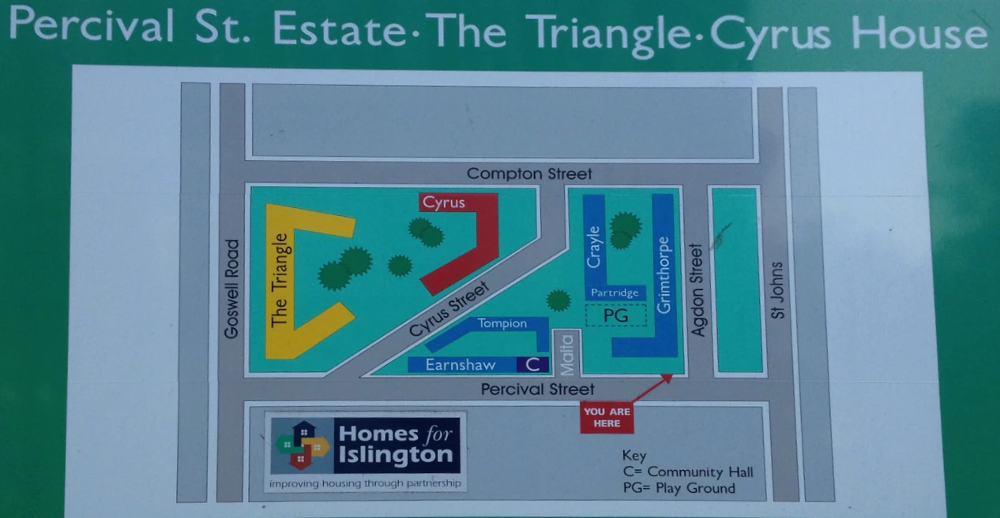

About
About the Percival Estate Community
We are a non-profit community organisation representing residents of
the Percival Estate in the London Borough of Islington; we help to
give a voice to residents and support with making improvements to
the estate.
We're in the process of establishing a formal
Tenants and Residents Association (TRA).
Constituting a TRA
(info pack)
is helpful for the community as this will enable us to access
specialised funding pots and other opportunities that can make our
estate a better place to live, for everyone.
If you're a tenant or leaseholder that is part of the estate and
you're interested in learning more and would like to become a member
of the community group, please
register to join
and we'll be in touch in due course.
About the Percival Estate
The Percival Estate is composed of six buildings that total 293
properties.

Notably, the seven-storey residential development
40 Percival Street
is owned by
The Guinness Partnership, not Islington Council. The block was stripped back to its
structural frame and
reclad and refurbished
as emergency life safety work following the Grenfell Tower fire,
with residents moved into alternative accommodation while it was
carried out. The new cladding went up in 2020 and the flats were
refitted the following spring. A community hall can be found on the
ground floor - this is leased to Islington Council and the space can
be booked by Percival Estate Community members.
History of the Percival Estate
The Percival Estate is an Islington Council estate in Clerkenwell so
named after its neighbouring street to the north side - Percival
Street - records show this was originally spelled as 'Perceval
Street', named after a former Prime Minister of the United Kingdom,
Spencer Perceval. The wider footprint of the estate is enclosed by
Compton Street on the south side, Agdon Street to the west and
neighbours The Triangle Estate to the east.
The estate was constructed in phases; it has a layered history tied
to redevelopment efforts in the 20th century.
Cyrus House (1933–1934)
Built by Finsbury Borough Council and designed by E. C. P. Monson in
a traditional style influenced by earlier housing projects. The
five-storey block contains 40 two- and three-bedroom flats, with
balcony access from a central courtyard reached via a striking
two-storey archway. It was part of a redevelopment enabled by the
Northampton Estate's discounted land offer and revised housing
subsidies. The project included extending Malta Street (Malta Street
has since been truncated and the southern portion incorporated into
Compton Street). The construction was handled by Gee, Walker & Slater
Ltd.
Tompion House & Earnshaw House (1946–1949)
Designed by Messrs Joseph in 1938 and built by W. H. Gaze & Sons Ltd
for the London County Council (LCC). These two six-storey blocks
were named after horologists Thomas Tompion and Thomas Earnshaw.
Grimthorpe House (1950–1952)
Crayle House (1959–1960)
Designed by the LCC Architect's Department and built by Stewart &
Partners Ltd on the site of a former factory. Initially comprising
20 maisonettes, the four-storey block with balcony access was
altered in 1983–1984. It was likely named after 17th-century London
watchmakers Richard and William Crayle.
Partridge Court (1976–1977)
Added by the Greater London Council (GLC) and designed in 1972 by
Renton Howard Wood Levin Partners, with Ove Arup & Partners as
engineers. This five-storey block houses 13 flats and maisonettes,
including facilities for elderly residents. It is named after an old
Clerkenwell family.
Each construction highlights the evolution of public housing in
Clerkenwell, from pre-war traditional styles to post-war Modernist
approaches, reflecting changing priorities and architectural trends.
Take a look at the links below to learn more about the history of
the estate:
News
Do you have some news you'd like to share with the wider estate?
Let us know.
Register
Facilities
Below is a list of facilities shared between residents of the
Percival Estate:
Other
nearby facilities
include:
- Finsbury Unity Room
- Brunswick Community Room
- King Square Community Centre
Estate Parking
This is parking in Percival Estate garages or the numbered bays
located outside Crayle House on Cyrus Street.
Islington Resident On-Street Parking Permit
Visitor Parking
You are in
Parking Zone A. Parking is restricted Mon-Fri 8:30am - 6:30pm, Sat
8:30am-1:30pm. Outside of these times parking is free.
Within these times your visitor can use
RingGo to pay for their
visitor short-stay parking or you can purchase a
Visitor e-voucher
on their behalf. To do so you will need:
- The parking location number shown on the bay sign
- To enter the amount of time you want to park for
-
Pay by phone by calling 020 7125 0039 or pay via the
RingGo app
- Your debit or credit card details
- Your vehicle registration number
You can also purchase paper vouchers online to be delivered to
you. These don't expire and can be used for any vehicle.
Contact
parkingpermits@islington.gov.uk
if you have questions.
Recycling
The Percival Estate has facilities for both food waste recycling and
household recycling for glass, plastic, paper and card, cans, foil,
cartons and aerosols. Estate recycling facilities can be seen here:
Small batteries can be recycled at the nearby
Finsbury Library, where you can also acquire free clear recycling bags and green
compostable liners for food waste. If you don't have a food waste
caddy you can request one
here.
There is a textile and clothes recycling facility at the
St John Street Recycling Area
on the corner of St John Street and Wyclif Street.
Other items can be recycled by taking them to the
Reuse and Recycling Centre
on Hornsey Street.
You can find more information about recycling and rubbish in
Islington here:
https://www.islington.gov.uk/recycling-and-rubbish
You can contact the Islington Council Recycling team via:
recyclingat islington dot gov
dot uk
Safety
Council tenants living on the estate must abide by the
Conditions of Tenancy
(PDF)
set by Islington Council. The council must ensure the properties
they manage are suitable for habitation by their tenants. As an
example,
damp and mould issues can be reported to Islington Council
repairs team. Communal areas are managed by Islington Council Estate Services
and cleaned by the
caretaking team. Private tenants have their own contracts with their landlords and
their own
rights and responsibilities
according to law. Landlords must ensure that their properties meet
necessary
safety standards
to be suitable for habitation for their tenants. Leaseholders must
ensure they follow the conditions of their
lease.
Anti-social behaviour (ASB)
is not permitted on the estate. You can
report ASB to Islington Council. You can
report criminal activity to the police. If there is an emergency or someone is at immediate risk, call
999. The non-emergency number is 101. You can also report in-person
at the front desk of
Islington Police Station. You can also keep your local Bunhill Safer Neighbourhoods Team
informed via:
SNTNI-Bunhillat met dot police
dot uk
You can get more involved with community policing by attending the
local
Bunhill ward panel, which gives residents an opportunity to share their community
safety concerns with the Metropolitan Police and Islington Council's
Community Safety Team. You can also apply to take part in a
Ride Along scheme
or other Community Observer Initiatives. Community Weapon Sweeps are
also a great way to support local policing. The closest
knife bin
is on Central Street, outside Finsbury Leisure Centre.
Be aware of
your nearest defibrillator
and
your nearest A&E.
Fire risk assessments for high-rise buildings are soon to be
published online via the building safety system,
Twinnedit, tenants and leaseholders who do not live in a high-rise building
can access the FRA for their building via
the Islington Council website
or by emailing
FireSafety@islington.gov.uk.
In the event of property damage, leaseholders are able to claim on
their
buildings insurance
from
Protector Insurance
which is paid for via their service charge. Leaseholders can claim
via the insurance by filing a
First Notification of Loss
via
protectorclaims@uk.sedgwick.com.
Team
The Founding Committee of the Percival Estate Community are
residents of Grimthorpe House and Tompion House. They are listed
below:
Contact
The Percival Estate Community is managed by a group of local
volunteer residents.
Contact them via: tra
at percivalestate dot com
...or use the contact form below:
You can report issues outside of the estate via
Love Clean Streets. If you have an issue or question with the estate you can contact
Islington Council via these emails:
Message Sent ✅
Your message was successfully sent to the Percival Estate Community
team.
The team will reply to your email in due course.
In the meantime, feel free to connect with us on social media:
Privacy Policy
Last updated: 30 August 2026
Who we are
The Percival Estate Community is an unincorporated non-profit
community organisation representing residents of the Percival Estate
in the London Borough of Islington. We are the data controller for
the personal information described in this policy. You can contact
us at
tra@percivalestate.com
or at Tompion Community Hall, 40 Percival Street, London, EC1V 0EB.
This policy explains what personal information we collect through
https://percivalestate.com/
and what we do with it. We handle your information in line with the
UK GDPR and the Data Protection Act 2018.
What we collect
When you register as a member. Our registration
form asks for your first and last name, your email address, your
mobile phone number, your address on the estate, and whether you are
a resident or non-resident leaseholder, a council tenant or a
private tenant. It also asks whether you would be interested in
joining the committee, whether you have a LinkedIn profile and if so
its address, and how you heard about us. You can optionally tell us
about improvements you would like to see on the estate, and add any
other comments.
Information about other people. If you choose to
tell us who told you about the group, we record that person's name
so that we can thank them. This is optional, so please only give us
a name if you are comfortable doing so. Anyone can ask us to remove
their name.
When you contact us. If you use our contact form or
email us, we collect your name, your email address and whatever you
choose to write in your message.
When you simply visit. If you accept analytics
cookies, Google Analytics counts your visit and records things like
the pages you look at, the kind of device you are using and the
country you are in. We see this only as totals for the whole site,
never as anything that identifies you, and if you decline then no
analytics cookies are set at all. Whichever you choose, our web host
and the third parties listed below receive your IP address as an
ordinary part of serving the page to you.
Why we use it, and our lawful basis
-
To run the community organisation — keeping
a record of members, organising meetings, and representing
residents to Islington Council and other bodies. Our lawful basis
is your consent, which you give by choosing to register.
-
To send you community updates about the estate
and the organisation. Our lawful basis is your consent, and you
can withdraw it at any time by emailing us.
-
To invite you to the estate WhatsApp Community
using the mobile number you give us. Our lawful basis is your
consent. Joining is optional and you can leave the group at any
time.
-
To understand the skills and experience members
can offer the community, from the LinkedIn profile you choose to
share, so that we can ask for help with things like planning or
legal questions. Our lawful basis is your consent, and you do not
have to share a profile.
-
To see how this website is being used, so that we
know which information residents actually find useful. Our lawful
basis is your consent, which you give through the cookie banner
and can withdraw at any time.
-
To reply to you when you get in touch. Our lawful
basis is our legitimate interest in responding to people who
contact us.
We do not sell your information, and we do not use it to make
automated decisions about you.
Who else handles your information
We use a small number of third-party services to run this website.
They process your information on our behalf:
-
Airtable — stores our membership records
and powers the forms and tables embedded on this site. Airtable is
based in the United States, so your information is transferred
outside the UK and protected by the safeguards in Airtable's own
data processing terms.
-
WhatsApp (Meta) — hosts the Percival Estate
WhatsApp Community. If you accept an invitation, your phone number
and WhatsApp profile become visible to WhatsApp and to the other
residents in the group, and WhatsApp's own terms and privacy
policy apply to you there.
-
Form Taxi — delivers messages sent through
our contact form to us by email.
-
Google Analytics — tells us how many people
visit the site and which pages they read, but only if you accept
analytics cookies. Google is based in the United States, so this
information is transferred outside the UK and protected by the
safeguards in Google's own data processing terms. We have not
turned on any advertising features.
-
GitHub Pages — hosts this website and keeps
standard server logs, which include visitors' IP addresses.
Members of the Percival Estate Community committee can see
membership records so that they can carry out their roles. We will
also disclose information if the law requires it.
How long we keep it
We keep your membership record for as long as you are a member. If
you ask us to remove you, or you tell us you have left the estate,
we will delete your record. Messages sent through the contact form
are kept only for as long as we need them to deal with what you
wrote to us about.
Your rights
Under UK data protection law you have the right to:
- ask for a copy of the information we hold about you;
- ask us to correct anything that is wrong;
- ask us to delete your information;
-
ask us to restrict or stop using it, or object to how we are using
it;
-
withdraw your consent at any time, which will not affect anything
we did before you withdrew it.
To do any of these, email
tra@percivalestate.com.
These rights are free to use and we will respond within one month.
If you are unhappy with how we have handled your information, you
can complain to the Information Commissioner's Office (ICO) at
https://ico.org.uk/make-a-complaint/
or on 0303 123 1113. We would appreciate the chance to put things
right first.
Cookies
The only cookies we set ourselves are the Google Analytics ones
described above, and we set them only if you accept them in the
banner we show on your first visit. We do not use advertising
cookies. You can
change your cookie choice
whenever you like.
The Airtable forms and tables embedded on our pages may set their
own cookies when they load; you can control these through your
browser settings.
Other websites
Our pages link to other websites, including Islington Council, the
Metropolitan Police and Airtable. We are not responsible for their
content or their privacy practices, and this policy does not cover
them.
Changes to this policy
If we change this policy we will update the date at the top of this
page. If the change is significant, we will tell members by email.
Terms and Conditions
Last updated: 30 August 2026
These terms apply to your use of
https://percivalestate.com/, run by the Percival Estate Community, an unincorporated non-profit
community organisation based at Tompion Community Hall, 40 Percival
Street, London, EC1V 0EB. By using the site you accept these terms
and our Privacy Policy.
1. About the information on this site
We are a volunteer-run residents' organisation, not a public
authority. We publish information about the estate in good faith to
help neighbours, but we are not Islington Council and we cannot
speak for it. Nothing here is legal, financial or professional
advice.
Council services, parking rules, waste collections, insurance terms
and safety procedures change, and our pages may fall out of date.
Always check the official source before you act — and in an
emergency, contact the emergency services on 999 rather than us.
2. Using this site
Please use the site lawfully and considerately. Do not attempt to
gain unauthorised access to it, disrupt it, or upload anything
harmful to it.
3. Our content
The text, images and design of this site belong to the Percival
Estate Community or to the people who licensed them to us. Residents
of the estate are welcome to share and reproduce our pages for
community, non-commercial purposes. Please ask us first for anything
else.
Some material is not ours to license — historical photographs,
documents produced by Islington Council or its insurers, and content
shown through embedded third-party services all remain the property
of their respective owners.
4. Things you send us
If you send us news, photographs or other material for the site, you
keep ownership of it. You give us permission to publish it on this
site and in our communications with residents, and you can ask us to
take it down at any time. Please only send us material that is yours
to share.
5. Other websites and embedded services
Our pages link to and embed content from other organisations,
including Islington Council and Airtable. We do not control those
services and are not responsible for their content or availability.
6. Our responsibility to you
We provide this site free of charge and as a community service, and
we cannot promise it will always be available, accurate or
up to date. To the extent the law allows, we are not liable for any
loss arising from your reliance on the information here.
Nothing in these terms limits our liability for death or personal
injury caused by our negligence, for fraud, or for anything else
that cannot lawfully be excluded. Nothing in these terms affects
your statutory rights as a consumer.
7. Changes to these terms
We may update these terms from time to time. The date at the top of
this page shows when we last did.
8. Governing law
These terms are governed by the laws of England and Wales, and
disputes may be brought before the courts of England and Wales.
9. Contact us
The Percival Estate Community
Email:
tra@percivalestate.com
Address: Tompion Community Hall, 40 Percival Street, London, EC1V
0EB, United Kingdom